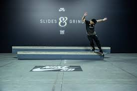

Olimpíadas
As olimpíadas foram adiadas para o ano de 2021. Os campeonatos para ver quem se classificaria para as Olimpíadas também foram cancelados e sem data para retorno.
Ranking das olimpíadas
Veja como está o ranking de classificação para as olimíadas de Tóquio. Clique aqui e confira.
Final do Slides & Grinds 4
 A quarta edição do Slides and Grinds chegou ao fim e tivemos uma surpresa nessa final. Foi uma grande competição, com grandes nomes do skate brasileiro da antiga geração e com novos nomes que estão surgingo. Essa edição contou também com uma final feminina, onde as duas representaram muito bem o skate e fizeram uma grande final. Essa edição contou com uma borda diferente, duas em uma uma mais baixa e outra mais alto, o que feu uma diversidade muito boa ao campeonato. Para ver as batalhas entre no canal SobreSkate e confira todas as batalhas e entrevistas dessa edição do campeonato.
Skate 4
A EA anuncio o jogo Skate 4, aguardado por muitos, mas não mostraram muitos detalhes do jogo.
Rayssa Leal
A skatista de 12 anos ganhou uma mini ramp de seus pais em sua casa para treinar durante a quarentena.
Relembre a part do Nyjah Huston na Nike
Sandro Dias anda em lugar inusitado
Sandro Dias fez um vídeo promocional e andou na ponte estaida, confira.
Brasileiros andam de skate em obras de Oscar Niemeyer
"Vida para algo adormecido", falam os skatista que vão lançar um documentário.